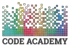

Masters Degree
I graduated from Plovdiv University Paisii Hilendarski in 2016, specializing in International Relations. My thesis focused on "Discrimination of People with Disabilities in the Working Age."
I really love coding, and I've got this big dream of becoming a great developer. Before I decided to chase after that dream, I tried out a bunch of different jobs - I was an interpreter, a BOD (Board of Directors) assistant, an accountant, and even a bottom-up operational controller. But you know what? I finally found my groove and started to see the real impact of what I do. The coolest thing about being a developer is that you can code from anywhere in the world, anytime during the day. You get to build stuff that makes other people's lives easier. That's the feeling I get when my code is up and running smoothly, and those pesky "bugs" are all sorted out.
Most of my career path you can find on my LinkedInpage.
I graduated from Plovdiv University Paisii Hilendarski in 2016, specializing in International Relations. My thesis focused on "Discrimination of People with Disabilities in the Working Age."
In February 2022, I started course of JAVA BACK-END DEVELOPMENT, there were also Spring Framework, Maven and SQL Oracle. Graduated in November 2022 and was one of twelse choosen to start work as Junior Dev in Codix. My projects you can see in my GitHub repos.
In March 2023, I started course of JavaScript Basics in Soft Uni, and after that continued my education with JS Fundamentals. Unfortunately, I postponed other modules for the next year - 2024. You can find all the tasks in my GitHub repos.
In the period between 06/2023 - 10/2023, I worked as Junior Java Back-end Developer at Compact Smart Solutions. The main responsibilities I had were to write and maintain XML-based SOAP services and REST applications, Jersey Framework. I gained experience with SVN, Gerrit and AZURE.
In the period between 06/2013 - 01/2022 I worked in EVN Bulgaria Toplofikatsia - based in Plovdiv. The last few years 05/2019 - 01/2022 I worked as Operational controller. My obligations were:
As a developer I really enjoy participating in events specially made for our society. My top 3 events I believe everyone should visit: